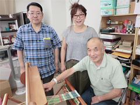
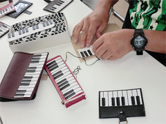

3.11を忘れない・・
みやぎ生協から被災地・宮城のいまをお伝えします
第50回 2017年10月5日
障がい者の就労を支援する場を再建するために
震災は、障がい者が通う事業所にも大きな傷跡を残しました。
みやぎセルプ協働受注センターは、就労支援事業所で働く障がい者の工賃向上を目的に様々な支援活動を行なう団体です。同センターの武井博道さんは「沿岸部にある障がい者就労支援事業所は、働いていた施設が津波で流されたり、建物は無事でも取引先が被災したために受託していた作業を失うなど、それぞれに厳しい現実に直面した」と当時をふり返ります。
事業を継続できなければ、月平均約1万9千円の1人当たり工賃（※1）さえ確保が難しいだけでなく、利用者が励みとしている社会参加の機会も奪ってしまいます。同センターは、被災事業所と被災地を支援したい企業をつないで新しい販路づくりを支援するとともに、販売イベントなどを通して各事業所の再建に奔走しました。
NPO法人みどり会みどり工房若林は、仙台市の荒浜にあった施設と農地を津波で流失しました。3カ月後、街なかのビルに移転しましたが、荒浜にいた頃のような農作業はできなくなりました。
「利用者さんは、商品の製作を通して自分も社会に貢献できているという思いが強いので、作業が無いのは本人も辛い。すぐに作業をつくらなければと思い、以前からやっていた手芸を始めました」と工房管理者の今野真理子さん。それぞれの障がい特性や心身のコンディションに合わせた作業プログラムを組み立てて、ピアノモチーフの雑貨シリーズ「ショパンチ」に特化した商品づくりを進めました。
ことし4月には、より利用者のためになるようにと就労継続支援B型事業所（※2）に移行。「今、困っているのは作業スペースが狭いこと。心が落ち着く場所の確保などは利用者さんの病状と直結する課題であり、次の展開を模索しているのですが、現状はうまくいきません」と話します。
他にも資金難などで施設を再建できず、今も仮の建物を拠点にしている事業所が数カ所あり、復興とはほど遠い実態が垣間見えます。利用者が働きやすく、より高い工賃を得られる環境をつくるために、関係者の努力はこれからも続きます。
※1 宮城県内の就労継続支援B型事業所で働く障がい者の平均工賃（2015年度）。
※2 雇用契約を結ばずに就労の機会を提供し、一般就労に向けて知識と能力の向上に必要な訓練などを行なう事業所。
|  |  |
| NPO法人みどり会みどり工房若林の今野真理子さん（中央）と利用者さん。 | みどり工房若林のブランドとなっている「ショパンチ」。パンチングレザーを材料に、利用者がペンケースやパスケース、ブックカバーを作ります。 |
 前の記事 第49回「生き辛さを抱える移動困難者たち」（2017年9月5日）
前の記事 第49回「生き辛さを抱える移動困難者たち」（2017年9月5日）